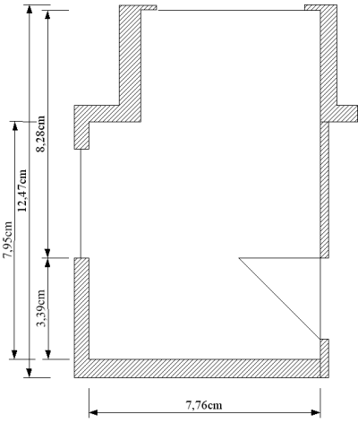
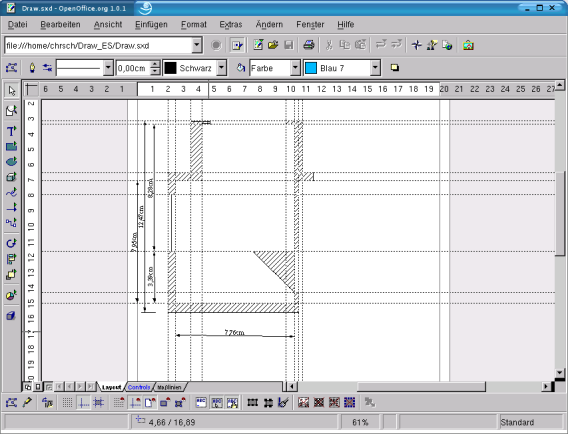

| [zurück] | [Hauptmenü] | [weiter] |
| [PDF] | ||
Anfertigen einer Zeichnung mit Maßlinien

Abbildung
1: Zeichnung mit Maßlinien
In Abbildung 1 sehen Sie einen Grundriss, der
über Maßlinien gezeichnet ist.
Wenn Sie so eine Zeichnung anfertigen, empfiehlt es sich, im Menü Ansicht - Ebenen die Ebenen sichtbar zu machen. Es erscheinen nun unten die drei Registerkarten Layout, Controls und Maßlinien. Dies sind die drei Standard-Ebenen. Über das Kontextmenü der Ebenen lassen sich noch neue Ebenen definieren. Auf der Layout-Ebene kann man dann das eigentliche Objekt zeichnen, auf der Control-Ebene befinden sich die Fanglinien und -punkte, und in der Maßlinien-Ebene kann man die Bemaßung anbringen.
|
|
Durch einen Doppelklick auf die Registerkarte der Ebene, kann man mit dem Kontrollkästchen „sichtbar“, die jeweilige Ebene ausblenden. Ausgeblendete Ebenen bekommen eine blaue Registerkarte. |
Die Fanglinien haben den Vorteil, dass man genau zeichnen und die Bemaßung exakt anbringen kann.

Abbildung
2: Die Ebenenansicht
Um dem Objekt Maßlinien hinzuzufügen,
klicken Sie auf die Schaltfläche „Maßlinie“
und Ziehen Sie die Maßlinie wie oben beim Traktordach
beschrieben auf. Dabei müssen Sie beachten, dass die Maßlinie
von unten nach oben aufgezogen werden muss, wenn die Hilfslinien nach
rechts zeigen sollen. Entsprechendes gilt dann für die anderen
Seiten.